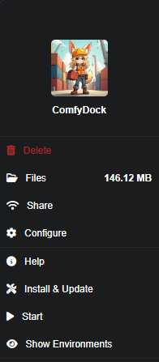

Installation¶
ComfyDock can be installed in two different ways: directly using the CLI tool or through the Pinokio app platform. Choose the method that works best for your workflow.
Prerequisites¶
- A Windows, Linux, or macOS machine (macOS is CPU-only)
- Docker: ComfyDock requires Docker to be installed on your system
- For desktop environments: Docker Desktop for Windows, macOS, or Linux
- For headless environments: Docker Engine + NVIDIA Container Toolkit
- Latest WSL (Windows only).
- Latest NVIDIA drivers.
- Adequate disk space.
Installing Docker Desktop¶
- Download Docker Desktop. (AMD64 recommended)
- Follow installation instructions for your operating system.
-
(Optional step: Windows) Ensure WSL is updated:
- Open PowerShell as Administrator.
-
Run the following command:
wsl --update -
Verify Docker installation by running:
wsl docker --version
If successful, you'll see output like:
Docker version 27.3.1, build ce12230.
Method 1: CLI Installation¶
Check out the GitHub repository for the latest updates and issues!
Option A: Install with UV (Recommended)¶
UV is a fast Python package manager that makes installation simple and reliable.
Step 1: Install UV¶
For detailed installation instructions, visit the UV documentation.
Linux/macOS (including WSL):
curl -LsSf https://astral.sh/uv/install.sh | sh
Windows:
powershell -ExecutionPolicy ByPass -c "irm https://astral.sh/uv/install.ps1 | iex"
Step 2: Install ComfyDock¶
As a global tool (recommended):
uv tool install comfydock
For temporary testing:
uvx comfydock --help
# Or run commands directly:
uvx comfydock up
For the latest version:
uvx comfydock@latest up
Step 3: Configure and Run¶
# Configure ComfyDock (optional)
comfydock config
# Start ComfyDock
comfydock up
Updating ComfyDock with UV¶
uv tool install --upgrade comfydock
Option B: Install with pip¶
If you prefer using pip or don't want to install UV:
pip install comfydock
Note: Requires Python 3.12 or higher.
Updating ComfyDock CLI with pip¶
pip install --upgrade comfydock
CLI Quick Start¶
Step 1: Configure ComfyDock¶
# Set your local ComfyUI path (if you have one)
comfydock config comfyui_path /path/to/your/ComfyUI
# Or use interactive configuration mode
comfydock config
Step 2: Start ComfyDock¶
comfydock up
This will start both the backend and frontend servers and open ComfyDock in your browser automatically.
Step 3: Stop ComfyDock¶
comfydock down
or
ctrl + c in the terminal
Additional Commands¶
# Show main help
comfydock --help
# Show help for a specific command
comfydock up --help
# List all current configuration values
comfydock config --list
# Start only the backend server without the frontend
comfydock up --backend
# Access running comfydock container environment via shell
comfydock dev exec
Method 2: Pinokio Installation¶
Step 1: Install the Pinokio App¶
- Download Pinokio
- Follow the installation instructions provided on the website.
- After installation:
- Open Pinokio and click Discover (top-right corner).
- Select Download from URL.
- Enter the following URL into the first field:
https://github.com/ComfyDock/ComfyDock-Pinokio
Leave the second field blank. - Click One-Click Install with Pinokio.
- Go through the standard installation process.
- You will be prompted to download Docker Desktop (see instructions above for installing docker), if docker is already installed you can continue.
- Finally, click Install and set an appropriate name to save the application.
Step 2: Install ComfyDock¶
- Ensure Pinokio is running.
- Click the ComfyDock app on the home screen.
- You should see the following menu:

- Click Install & Update to begin setup.
- Make sure Docker Desktop is running and click Start.
- Look for
Uvicorn running on http://0.0.0.0:5172. - Click Show Environments to view the main interface.
- If empty, wait a bit and click refresh.